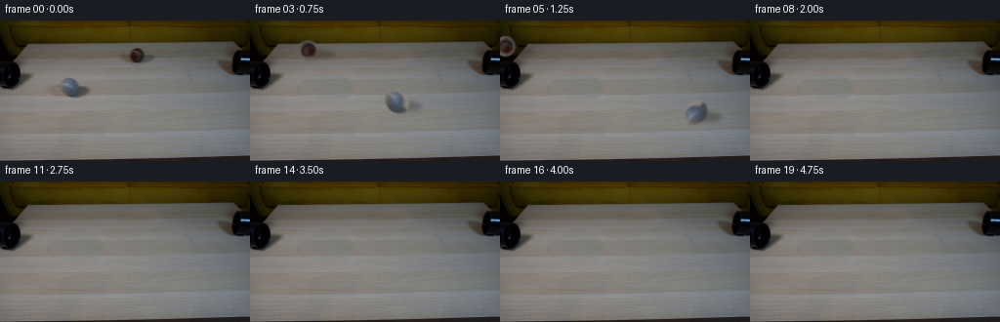
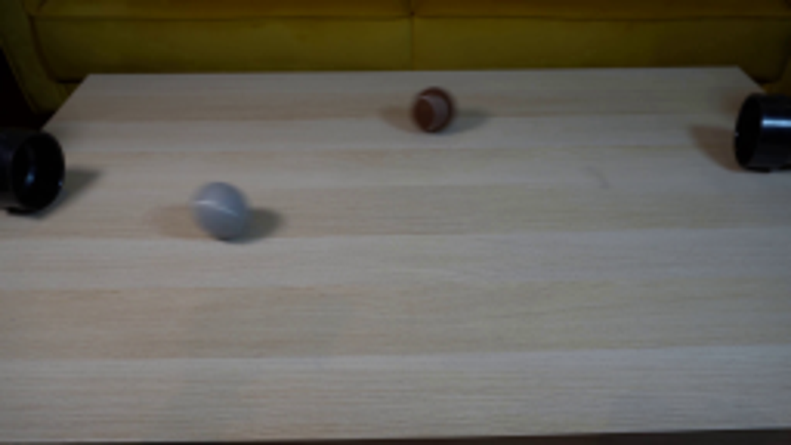
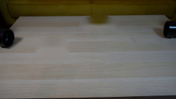
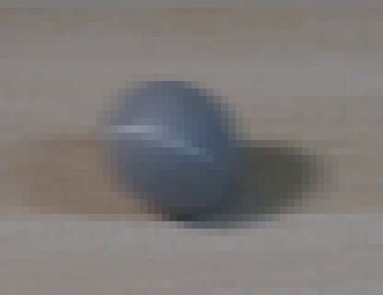
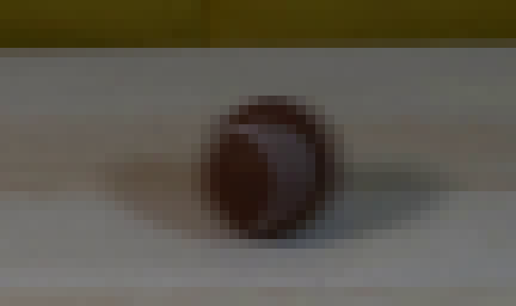
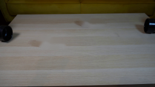
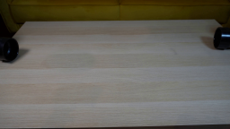
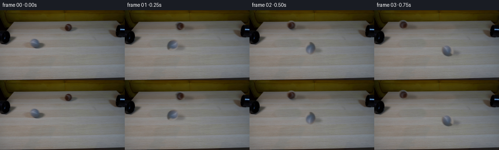

CODING AGENTS AS PIXEL WORLD MODELS
traex/GPT-5.6-Sol · 0179
点击播放 · 原生 RGB 像素
逐轮保存的候选
回放视频、检查图与代码变化。
每份候选均可单独播放。实际图片检查记录在下方工具轨迹中。
候选 01播放与检查图
点击播放 · 原生 RGB 像素

展开代码变化
--- 上一保存版本
+++ 本次保存版本
@@ -0,0 +1,142 @@
+from pathlib import Path
+import math
+import cv2
+import numpy as np
+from PIL import Image
+import artifact_io
+
+CASE_DIR = Path(__file__).resolve().parent
+
+
+def soft_clone(base, target_box, source_xy, radii):
+ """Replace an object with wood sampled from the same rows, feathered elliptically."""
+ x0, y0, x1, y1 = target_box
+ sx, sy = source_xy
+ h, w = y1 - y0, x1 - x0
+ source = base[sy:sy + h, sx:sx + w].copy()
+ yy, xx = np.mgrid[:h, :w]
+ cx, cy = (w - 1) / 2.0, (h - 1) / 2.0
+ rx, ry = radii
+ d = ((xx - cx) / rx) ** 2 + ((yy - cy) / ry) ** 2
+ alpha = np.clip((1.06 - d) / 0.38, 0.0, 1.0).astype(np.float32)
+ alpha = cv2.GaussianBlur(alpha, (0, 0), 1.15)[..., None]
+ out = base.copy()
+ out[y0:y1, x0:x1] = out[y0:y1, x0:x1] * (1.0 - alpha) + source * alpha
+ return out
+
+
+def ball_sprite(image, center, crop_box, radii):
+ """Extract the photographed ball itself with a tight antialiased oval matte."""
+ x0, y0, x1, y1 = crop_box
+ rgb = image[y0:y1, x0:x1].astype(np.float32)
+ h, w = rgb.shape[:2]
+ cx, cy = center[0] - x0, center[1] - y0
+ yy, xx = np.mgrid[:h, :w]
+ rx, ry = radii
+ d = np.sqrt(((xx - cx) / rx) ** 2 + ((yy - cy) / ry) ** 2)
+ # One-pixel feather preserves the natural low-resolution photographic edge.
+ alpha = np.clip((1.055 - d) / 0.105, 0.0, 1.0).astype(np.float32)
+ return rgb, alpha, (cx, cy)
+
+
+def transformed_sprite(rgb, alpha, pivot, angle, scale=1.0):
+ h, w = alpha.shape
+ matrix = cv2.getRotationMatrix2D(pivot, angle, scale)
+ color = cv2.warpAffine(rgb, matrix, (w, h), flags=cv2.INTER_LINEAR,
+ borderMode=cv2.BORDER_CONSTANT, borderValue=(0, 0, 0))
+ matte = cv2.warpAffine(alpha, matrix, (w, h), flags=cv2.INTER_LINEAR,
+ borderMode=cv2.BORDER_CONSTANT, borderValue=0)
+ # A short exposure smear cues the high speed without turning the balls into streaks.
+ kernel = np.array([0.07, 0.16, 0.54, 0.16, 0.07], np.float32)
+ premul = color * matte[..., None]
+ matte = cv2.filter2D(matte, -1, kernel.reshape(1, -1), borderType=cv2.BORDER_CONSTANT)
+ premul = cv2.filter2D(premul, -1, kernel.reshape(1, -1), borderType=cv2.BORDER_CONSTANT)
+ color = premul / np.maximum(matte[..., None], 1e-5)
+ return color, np.clip(matte, 0.0, 1.0)
+
+
+def composite(frame, color, alpha, center_xy, pivot):
+ h, w = alpha.shape
+ left = int(round(center_xy[0] - pivot[0]))
+ top = int(round(center_xy[1] - pivot[1]))
+ x0, y0 = max(0, left), max(0, top)
+ x1, y1 = min(frame.shape[1], left + w), min(frame.shape[0], top + h)
+ if x0 >= x1 or y0 >= y1:
+ return
+ sx0, sy0 = x0 - left, y0 - top
+ sx1, sy1 = sx0 + x1 - x0, sy0 + y1 - y0
+ a = alpha[sy0:sy1, sx0:sx1, None]
+ frame[y0:y1, x0:x1] = frame[y0:y1, x0:x1] * (1.0 - a) + color[sy0:sy1, sx0:sx1] * a
+
+
+def shadow_layer(shape, center, kind, scale=1.0):
+ """Soft, low oblique shadow consistent with the upper-left lighting in frame zero."""
+ h, w = shape[:2]
+ mask = np.zeros((h, w), np.float32)
+ if kind == "grey":
+ # Contact core plus a diffuse tail cast to the lower right.
+ cv2.ellipse(mask, (round(center[0] + 9 * scale), round(center[1] + 4 * scale)),
+ (round(15 * scale), round(5 * scale)), 4, 0, 360, 0.23, -1)
+ cv2.ellipse(mask, (round(center[0] + 3 * scale), round(center[1] + 6 * scale)),
+ (round(8 * scale), round(3 * scale)), 0, 0, 360, 0.24, -1)
+ else:
+ cv2.ellipse(mask, (round(center[0] + 11 * scale), round(center[1] + 4 * scale)),
+ (round(17 * scale), round(4 * scale)), 2, 0, 360, 0.21, -1)
+ cv2.ellipse(mask, (round(center[0] + 3 * scale), round(center[1] + 6 * scale)),
+ (round(7 * scale), round(3 * scale)), 0, 0, 360, 0.25, -1)
+ return cv2.GaussianBlur(mask, (0, 0), 2.2)
+
+
+def main():
+ first = np.asarray(Image.open(CASE_DIR / "first_frame.png").convert("RGB"), dtype=np.uint8)
+ source = first.astype(np.float32)
+
+ # Recover the locked-off empty tabletop. Both donor strips are from the same
+ # scanlines, retaining the real grain, exposure and perspective of the photograph.
+ background = soft_clone(source, (45, 51, 111, 85), (109, 51), (31, 15))
+ background = soft_clone(background, (116, 23, 172, 50), (62, 23), (25, 12))
+
+ grey = ball_sprite(source, (73.0, 67.0), (57, 54, 94, 82), (12.6, 10.2))
+ brown = ball_sprite(source, (140.0, 35.0), (126, 22, 156, 48), (10.3, 9.5))
+
+ frames = [first.copy()]
+ for index in range(1, 20):
+ frame = background.copy()
+
+ # Straight projected tracks lead directly away from the two offset pipe mouths.
+ # At 4 fps these displacements read as a brisk real-time demonstration.
+ gpos = (73.0 + 25.5 * index, 67.0 + 5.35 * index)
+ bpos = (140.0 - 27.0 * index, 35.0 - 1.78 * index)
+ gscale = 1.0 + 0.00055 * (gpos[0] - 73.0)
+ bscale = 1.0 + 0.00025 * (140.0 - bpos[0])
+
+ # Shadows are composited before the balls, and disappear only once their caster
+ # has fully crossed the frame edge.
+ if -28 < gpos[0] < 284 and -20 < gpos[1] < 164:
+ sh = shadow_layer(frame.shape, gpos, "grey", gscale)
+ frame *= (1.0 - sh[..., None])
+ if -28 < bpos[0] < 284 and -20 < bpos[1] < 164:
+ sh = shadow_layer(frame.shape, bpos, "brown", bscale)
+ frame *= (1.0 - sh[..., None])
+
+ # Rolling angle follows arc length (opposite signs for opposite travel).
+ gangle = -(gpos[0] - 73.0) / 11.0 * 180.0 / math.pi
+ bangle = -(bpos[0] - 140.0) / 9.5 * 180.0 / math.pi
+ if -25 < gpos[0] < 281:
+ col, a = transformed_sprite(grey[0], grey[1], grey[2], gangle, gscale)
+ composite(frame, col, a, gpos, grey[2])
+ if -25 < bpos[0] < 281:
+ col, a = transformed_sprite(brown[0], brown[1], brown[2], bangle, bscale)
+ composite(frame, col, a, bpos, brown[2])
+
+ frames.append(np.clip(np.rint(frame), 0, 255).astype(np.uint8))
+
+ output = np.stack(frames, axis=0)
+ assert output.shape == (20, 144, 256, 3)
+ assert output.dtype == np.uint8
+ assert np.array_equal(output[0], first)
+ artifact_io.save(output, CASE_DIR)
+
+
+if __name__ == "__main__":
+ main()
可观测工具轨迹
实际执行的命令与返回图片。
命令 1exit 0
/bin/bash -lc "cat prompt.txt && printf '\\n--- GENERATION RULES ---\\n' && cat GENERATION_RULES.md"
命令 2exit 0
/bin/bash -lc "find . -maxdepth 2 -type f -printf '%p\\n' | sort && printf '\\n--- tools ---\\n' && command -v ffmpeg; command -v python3; python3 - <<'PY' mods=['cv2','PIL','numpy','imageio','moviepy'] for m in mods: try: x=__import__(m); print(m, getattr(x,'__version__','ok')) except Exception as e: print(m,'MISSING',e) PY"
命令 3exit 0
/bin/bash -lc 'cat artifact_io.py'
命令 4exit 0
/bin/bash -lc "python3 - <<'PY'
from PIL import Image
import numpy as np
im=np.array(Image.open('first_frame.png').convert('RGB'))
print(im.shape, im.dtype)
# save upscaled nearest and bicubic maybe inspect
Image.fromarray(im).resize((1024,576)).save('.tmp/up.png')
PY"命令 5exit 0
/bin/bash -lc "python3 - <<'PY'
from PIL import Image
im=Image.open('first_frame.png')
for n,box in [('grey',(48,48,100,88)),('brown',(112,18,166,50)),('left',(0,32,40,80)),('right',(216,20,256,66))]:
im.crop(box).resize(((box[2]-box[0])*12,(box[3]-box[1])*12),Image.Resampling.NEAREST).save(f'.tmp/{n}.png')
PY"命令 6exit 0
/bin/bash -lc "cat > .tmp/test_bg.py <<'PY'
import cv2, numpy as np
from PIL import Image
im=cv2.imread('first_frame.png')
mask=np.zeros(im.shape[:2],np.uint8)
# object + projected shadows
cv2.ellipse(mask,(75,68),(28,15),0,0,360,255,-1)
cv2.ellipse(mask,(143,35),(29,13),0,0,360,255,-1)
for r in [3,5,8]:
bg=cv2.inpaint(im,mask,r,cv2.INPAINT_TELEA)
cv2.imwrite(f'.tmp/bg{r}.png',bg)
PY
python3 .tmp/test_bg.py"命令 7exit 0
/bin/bash -lc "python3 - <<'PY'
import cv2,numpy as np
im=cv2.imread('first_frame.png'); m=np.zeros(im.shape[:2],np.uint8)
cv2.ellipse(m,(73,68),(14,11),0,0,360,255,-1); cv2.ellipse(m,(86,72),(24,8),0,0,360,255,-1)
cv2.ellipse(m,(140,35),(10,9),0,0,360,255,-1); cv2.ellipse(m,(154,39),(22,6),0,0,360,255,-1)
for r in [2,3,4]:cv2.imwrite(f'.tmp/bgn{r}.png',cv2.inpaint(im,m,r,cv2.INPAINT_TELEA))
PY"命令 8exit 0
/bin/bash -lc "python3 - <<'PY'
from PIL import Image
import numpy as np
im=np.array(Image.open('first_frame.png'))
for name,pts in {
'grey':[(72,68),(66,63),(79,63),(80,72),(70,75),(62,67),(75,67)],
'brown':[(140,35),(135,31),(143,29),(145,36),(136,39),(132,35),(148,35)],
'wood':[(72,50),(72,85),(110,68),(140,50),(140,20)]}.items():
print(name)
for x,y in pts:print((x,y),im[y,x])
PY"命令 9exit 0
/bin/bash -lc "cat > .tmp/bgclone.py <<'PY'
import cv2,numpy as np
im=cv2.imread('first_frame.png').astype(np.float32)
out=im.copy()
def clone(tx0,ty0,tx1,ty1,sx0,sy0,rx,ry):
global out
h=ty1-ty0;w=tx1-tx0
src=im[sy0:sy0+h,sx0:sx0+w].copy()
# match broad row luminance at endpoints using low alpha no
Y,X=np.mgrid[:h,:w]; cx=(w-1)/2;cy=(h-1)/2
d=(X-cx)**2/rx**2+(Y-cy)**2/ry**2
a=np.clip((1.05-d)/.4,0,1)
a=cv2.GaussianBlur(a.astype(np.float32),(0,0),1.3)[...,None]
out[ty0:ty1,tx0:tx1]=out[ty0:ty1,tx0:tx1]*(1-a)+src*a
clone(45,51,111,85,109,51,31,15)
clone(116,23,172,50,62,23,25,12)
cv2.imwrite('.tmp/bgclone.png',np.uint8(np.clip(out,0,255)))
PY
python3 .tmp/bgclone.py"命令 10exit 0
/bin/bash -lc "cat > generate.py <<'PY'
from pathlib import Path
import math
import cv2
import numpy as np
from PIL import Image
import artifact_io
CASE_DIR = Path(__file__).resolve().parent
def soft_clone(base, target_box, source_xy, radii):
\"\"\"Replace an object with wood sampled from the same rows, feathered elliptically.\"\"\"
x0, y0, x1, y1 = target_box
sx, sy = source_xy
h, w = y1 - y0, x1 - x0
source = base[sy:sy + h, sx:sx + w].copy()
yy, xx = np.mgrid[:h, :w]
cx, cy = (w - 1) / 2.0, (h - 1) / 2.0
rx, ry = radii
d = ((xx - cx) / rx) ** 2 + ((yy - cy) / ry) ** 2
alpha = np.clip((1.06 - d) / 0.38, 0.0, 1.0).astype(np.float32)
alpha = cv2.GaussianBlur(alpha, (0, 0), 1.15)[..., None]
out = base.copy()
out[y0:y1, x0:x1] = out[y0:y1, x0:x1] * (1.0 - alpha) + source * alpha
return out
def ball_sprite(image, center, crop_box, radii):
\"\"\"Extract the photographed ball itself with a tight antialiased oval matte.\"\"\"
x0, y0, x1, y1 = crop_box
rgb = image[y0:y1, x0:x1].astype(np.float32)
h, w = rgb.shape[:2]
cx, cy = center[0] - x0, center[1] - y0
yy, xx = np.mgrid[:h, :w]
rx, ry = radii
d = np.sqrt(((xx - cx) / rx) ** 2 + ((yy - cy) / ry) ** 2)
# One-pixel feather preserves the natural low-resolution photographic edge.
alpha = np.clip((1.055 - d) / 0.105, 0.0, 1.0).astype(np.float32)
return rgb, alpha, (cx, cy)
def transformed_sprite(rgb, alpha, pivot, angle, scale=1.0):
h, w = alpha.shape
matrix = cv2.getRotationMatrix2D(pivot, angle, scale)
color = cv2.warpAffine(rgb, matrix, (w, h), flags=cv2.INTER_LINEAR,
borderMode=cv2.BORDER_CONSTANT, borderValue=(0, 0, 0))
matte = cv2.warpAffine(alpha, matrix, (w, h), flags=cv2.INTER_LINEAR,
borderMode=cv2.BORDER_CONSTANT, borderValue=0)
# A short exposure smear cues the high speed without turning the balls into streaks.
kernel = np.array([0.07, 0.16, 0.54, 0.16, 0.07], np.float32)
premul = color * matte[..., None]
matte = cv2.filter2D(matte, -1, kernel.reshape(1, -1), borderType=cv2.BORDER_CONSTANT)
premul = cv2.filter2D(premul, -1, kernel.reshape(1, -1), borderType=cv2.BORDER_CONSTANT)
color = premul / np.maximum(matte[..., None], 1e-5)
return color, np.clip(matte, 0.0, 1.0)
def composite(frame, color, alpha, center_xy, pivot):
h, w = alpha.shape
left = int(round(center_xy[0] - pivot[0]))
top = int(round(center_xy[1] - pivot[1]))
x0, y0 = max(0, left), max(0, top)
x1, y1 = min(frame.shape[1], left + w), min(frame.shape[0], top + h)
if x0 >= x1 or y0 >= y1:
return
sx0, sy0 = x0 - left, y0 - top
sx1, sy1 = sx0 + x1 - x0, sy0 + y1 - y0
a = alpha[sy0:sy1, sx0:sx1, None]
frame[y0:y1, x0:x1] = frame[y0:y1, x0:x1] * (1.0 - a) + color[sy0:sy1, sx0:sx1] * a
def shadow_layer(shape, center, kind, scale=1.0):
\"\"\"Soft, low oblique shadow consistent with the upper-left lighting in frame zero.\"\"\"
h, w = shape[:2]
mask = np.zeros((h, w), np.float32)
if kind == \"grey\":
# Contact core plus a diffuse tail cast to the lower right.
cv2.ellipse(mask, (round(center[0] + 9 * scale), round(center[1] + 4 * scale)),
(round(15 * scale), round(5 * scale)), 4, 0, 360, 0.23, -1)
cv2.ellipse(mask, (round(center[0] + 3 * scale), round(center[1] + 6 * scale)),
(round(8 * scale), round(3 * scale)), 0, 0, 360, 0.24, -1)
else:
cv2.ellipse(mask, (round(center[0] + 11 * scale), round(center[1] + 4 * scale)),
(round(17 * scale), round(4 * scale)), 2, 0, 360, 0.21, -1)
cv2.ellipse(mask, (round(center[0] + 3 * scale), round(center[1] + 6 * scale)),
(round(7 * scale), round(3 * scale)), 0, 0, 360, 0.25, -1)
return cv2.GaussianBlur(mask, (0, 0), 2.2)
def main():
first = np.asarray(Image.open(CASE_DIR / \"first_frame.png\").convert(\"RGB\"), dtype=np.uint8)
source = first.astype(np.float32)
# Recover the locked-off empty tabletop. Both donor strips are from the same
# scanlines, retaining the real grain, exposure and perspective of the photograph.
background = soft_clone(source, (45, 51, 111, 85), (109, 51), (31, 15))
background = soft_clone(background, (116, 23, 172, 50), (62, 23), (25, 12))
grey = ball_sprite(source, (73.0, 67.0), (57, 54, 94, 82), (12.6, 10.2))
brown = ball_sprite(source, (140.0, 35.0), (126, 22, 156, 48), (10.3, 9.5))
frames = [first.copy()]
for index in range(1, 20):
frame = background.copy()
# Straight projected tracks lead directly away from the two offset pipe mouths.
# At 4 fps these displacements read as a brisk real-time demonstration.
gpos = (73.0 + 25.5 * index, 67.0 + 5.35 * index)
bpos = (140.0 - 27.0 * index, 35.0 - 1.78 * index)
gscale = 1.0 + 0.00055 * (gpos[0] - 73.0)
bscale = 1.0 + 0.00025 * (140.0 - bpos[0])
# Shadows are composited before the balls, and disappear only once their caster
# has fully crossed the frame edge.
if -28 < gpos[0] < 284 and -20 < gpos[1] < 164:
sh = shadow_layer(frame.shape, gpos, \"grey\", gscale)
frame *= (1.0 - sh[..., None])
if -28 < bpos[0] < 284 and -20 < bpos[1] < 164:
sh = shadow_layer(frame.shape, bpos, \"brown\", bscale)
frame *= (1.0 - sh[..., None])
# Rolling angle follows arc length (opposite signs for opposite travel).
gangle = -(gpos[0] - 73.0) / 11.0 * 180.0 / math.pi
bangle = -(bpos[0] - 140.0) / 9.5 * 180.0 / math.pi
if -25 < gpos[0] < 281:
col, a = transformed_sprite(grey[0], grey[1], grey[2], gangle, gscale)
composite(frame, col, a, gpos, grey[2])
if -25 < bpos[0] < 281:
col, a = transformed_sprite(brown[0], brown[1], brown[2], bangle, bscale)
composite(frame, col, a, bpos, brown[2])
frames.append(np.clip(np.rint(frame), 0, 255).astype(np.uint8))
output = np.stack(frames, axis=0)
assert output.shape == (20, 144, 256, 3)
assert output.dtype == np.uint8
assert np.array_equal(output[0], first)
artifact_io.save(output, CASE_DIR)
if __name__ == \"__main__\":
main()
PY
python3 generate.py
python3 - <<'PY'
from PIL import Image
import numpy as np
im=np.array(Image.open('first_frame.png').convert('RGB'))
out=np.array(Image.open('frames/00.png').convert('RGB'))
print('frame00 exact:',np.array_equal(im,out),'maxdiff',np.abs(im.astype(int)-out.astype(int)).max())
print('frames:',len(list(__import__('pathlib').Path('frames').glob('*.png'))))
PY"命令 11exit 0
/bin/bash -lc "python3 -m py_compile generate.py && sha256sum pixels.npz frames/00.png first_frame.png generate.py && python3 - <<'PY'
from pathlib import Path
from PIL import Image
import numpy as np
files=sorted(Path('frames').glob('*.png'))
assert len(files)==20
arr=np.stack([np.asarray(Image.open(p).convert('RGB')) for p in files])
assert arr.shape==(20,144,256,3) and arr.dtype==np.uint8
assert np.array_equal(arr[0],np.asarray(Image.open('first_frame.png').convert('RGB')))
z=np.load('pixels.npz')['pixels']
assert z.shape==(144,256,20)
print('validated',arr.shape,arr.dtype,'npz',z.shape,z.dtype)
print('changed pixels by frame:', [int(np.any(arr[i]"'!=arr[i-1],axis=2).sum()) for i in range(1,20)])
PY'视觉工具实际返回图片 1

视觉工具实际返回图片 2

视觉工具实际返回图片 3

视觉工具实际返回图片 4

视觉工具实际返回图片 5

视觉工具实际返回图片 6

视觉工具实际返回图片 7

视觉工具实际返回图片 8

视觉工具实际返回图片 9

保存候选 1 份；完成命令 11 次；可验证图片返回 9 张。原始 API 响应与完整日志保留在本地。